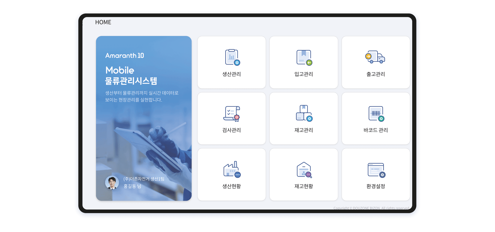
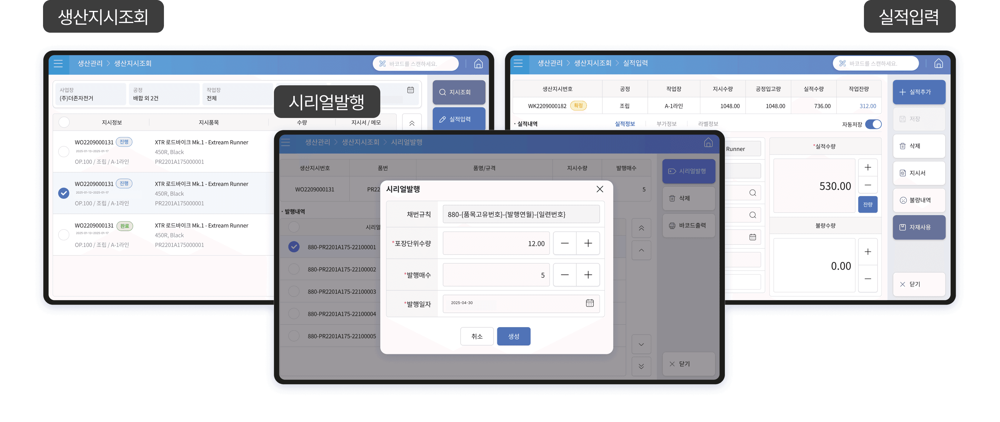

모바일-물류관리
모바일 물류관리시스템으로 실현되는 디지털 전환의 완성!
현장의 업무는 현장에서, 복잡한 인프라 없이 간편하게 하나로 연결되는 물류·생산 프로세스를 경험하세요.
-
01. 현장의 업무는 현장에서
터치 기반 사용 환경 제공
현장 업무를 위한 다양한 기능 지원
현장에서 데이터를 즉시 입력하여 실시간 데이터 공유 실현 -
02. 디바이스 선택은 자유롭게
현장 업무를 언제, 어디서든 처리할 수 있는 환경제공
PC, 모바일, 키오스크 등 다양한 디바이스와 호환
바코드 스캐너와 연결할 수 있어 PDA 장비 대체 가능 -
03. 복잡한 인프라 없이 간편하게
Amaranth 10의 옵션 모듈 추가로 사용
보유한 디바이스가 있다면 현장 업무에 바로 적용
실시간 데이터 확인 및 유지관리 용이 -
04. 디지털 전환을 합리적으로
합리적인 비용으로 시스템 구축 가능
장비 선택이 자유로워 저렴한 디바이스로도 사용가능
LTE 모델 사용 시 네트워크 공사비용 절감 가능
-
실시간 생산 데이터 입력 및 공유
현장에서 직접 실적을 입력해 실시간 정보 공유가 가능합니다.
Amaranth 10 생산관리 모듈의 생산지시를 모바일에서 바로 조회
터치와 바코드 스캔으로 간편하게 실적 정보 등록
실시간 데이터 연동으로 사무실과 현장 간 정보 누락 방지 -
바코드 출력 및 시리얼 기반 추적 관리
정확한 데이터 입력과 추적관리를 위한 바코드·시리얼 시스템을 지원합니다.
QR코드, Code-128 등 다양한 형식 및 사이즈의 바코드 출력
시리얼번호 부여 및 제품 부착으로 입출고/실적 자동 추적
스캔 입력으로 오입력 최소화 및 물류 흐름 실시간 확인 -
생산 진행 모니터링 및 시각화 현황 제공
복잡한 생산 흐름을 시각화하여 진행 상황을 한눈에 확인할 수 있습니다.
생산지시부터 실적까지 전체 공정을 도식화된 화면으로 확인
실적, 자원, 재고 등 다양한 지표를 실시간 조회
작업자·관리자 모두 빠르게 현황 파악 및 업무 의사결정 가능
모바일 물류관리 시스템 메인포털

주요 업무 메뉴

생산지시조회 : 현장에서 최신 생산지시 내역을 실시간 확인할 수 있습니다.
실적입력 : 생산 완료된 수량을 터치 또는 바코드 스캔으로 즉시 등록합니다.
바코드 출력 : QR 및 Code-128 바코드를 다양한 크기로 간편 출력할 수 있습니다.
시리얼 발행 및 부착 : 시리얼 번호를 자동 생성하고 제품에 부착해 정밀 추적이 가능합니다.
입출고 처리 : 스캔 기반 입출고로 실시간 재고 반영 및 물류 흐름 통제가 가능합니다.
생산 모니터링 : 생산 지시부터 실적까지의 전체 흐름을 시각화하여 한눈에 파악합니다.